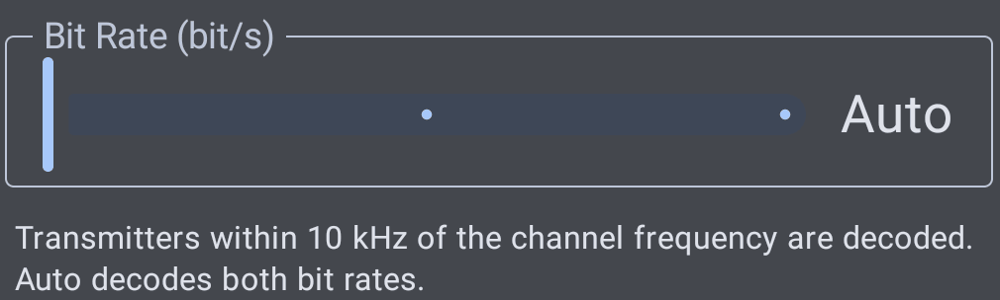
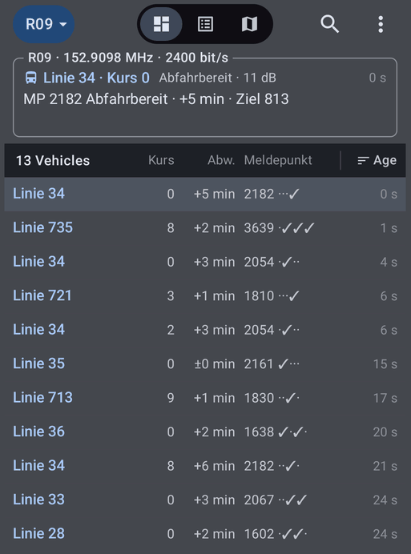
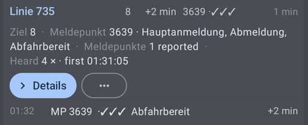
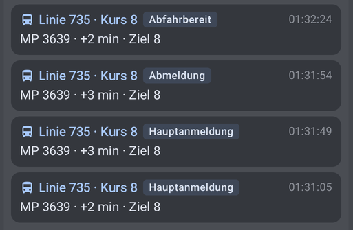
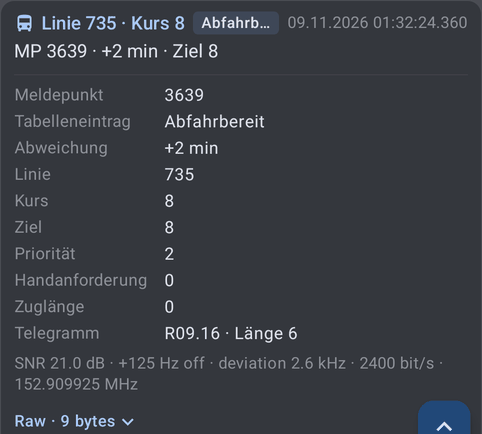

R09
R09 is the radio protocol trams and buses in Germany (and some neighboring countries) use to request priority at traffic signals - the "green wave" that gives a public transport vehicle an early or extended green light. It has nothing to do with GPS tracking or timetable information: it is a short request/notification between a vehicle and the next traffic signal it is approaching.
RF Analyzer decodes these telegrams and shows which lines and runs are on the move near you, which reporting points they pass and how late they are running. It only receives; it is not involved in the actual traffic light control.
All you need is a receiver for the VHF channel of your city (around 150 to 170 MHz) - an RTL-SDR with a simple antenna works. R09 is part of the Digital Extension, which must be installed.
How R09 Works
The idea behind it
Trackside receivers near a traffic signal listen for short radio telegrams sent by approaching buses and trams. When a valid telegram arrives, the signal controller can shorten the wait, extend a green phase or insert an extra one, so the vehicle gets through with as little delay as possible.
On the air
All vehicles of a city send on one VHF channel, as short FM bursts: about a tenth of a second of unmodulated carrier, then the telegram itself, a fast two-tone data signal at 2400 bit/s (some systems use 1200 bit/s). Every telegram is sent two or three times in a row, a fraction of a second apart, so the trackside receiver gets a second chance - and so does RF Analyzer, which shows such repeats once: a telegram identical to one received less than two seconds earlier is not listed again. In the waterfall, R09 traffic looks like short dashes on the channel; on a busy channel there are several per second.
What's inside a telegram
- Linie (Line) and Kurs (Run) - together identify the transit route and the scheduled run on it. There is no vehicle ID in the protocol, so RF Analyzer uses the line/run/destination combination as a stand-in identity to group the telegrams of what is presumably the same vehicle.
- Meldepunkt (Reporting point) - a number identifying which traffic signal or detection point this telegram is meant for. Meldepunkt numbers are assigned locally by the transit authority, so the same number can mean a different place in a different city. RF Analyzer cannot translate it into a location.
- Ziel (Destination number) - an internal code for the vehicle's destination, again only meaningful with local knowledge of the network.
- Priorität (Priority) and Handanforderung (manual request by the driver) - how urgently priority is requested.
- Zuglänge (Train length) - for coupled trams, how many cars are in the consist.
- Abweichung (Schedule deviation) - how many minutes early or late the vehicle is running.
The four telegram types
A vehicle doesn't send just one telegram per signal - it sends a short sequence as it approaches, arrives at and leaves each reporting point. RF Analyzer shows the type as a small tag (Tabelleneintrag, the telegram's table entry):
| Type | Meaning |
|---|---|
| Voranmeldung (pre-announcement) | An early heads-up, sent while the vehicle is still some distance away. |
| Hauptanmeldung (main announcement) | The actual priority request, sent shortly before reaching the signal. |
| Abmeldung (cancellation) | Sent once the vehicle has cleared the intersection: the signal can return to normal operation. |
| Abfahrbereit (ready to depart) | Used at stops directly in front of a signal: sent the moment the vehicle is ready to pull away (for example when the doors close), so the signal can time the green phase from that moment. |
Seeing all three (or four) types for the same reporting point means you received the complete sequence of a vehicle passing that intersection.
Getting Started
The quickest way to start is the mode button in the header of the Digital tab: tap it, tap Start next to R09 and pick your city (Berlin, Dresden, Karlsruhe/Ulm, Heidelberg). Set up your source first in the Source tab.
You can also set it up by hand: select R09 as the demodulation mode in the Demodulation tab and put the channel frequency on your city's R09 channel. Telegrams appear in the Digital tab as soon as a vehicle passes a reporting point within range - on a quiet channel that can take a few minutes.
Controls in the Demodulation Tab

- Channel Frequency: your city's R09 channel. It doesn't have to be exact: RF Analyzer decodes every transmitter within ±10 kHz of it (the gray channel area is 20 kHz wide), which also covers the frequency error of inexpensive receivers. Each telegram shows how far off it was (see below).
- Bit Rate: Auto (default) decodes 2400 and 1200 bit/s telegrams alike, without losing any sensitivity at 2400 bit/s. If you know your city uses 2400 bit/s (most do), choosing it halves the processor load.
In the Digital Tab
The telegrams show up in the Digital tab. That page explains the controls all modes share; here is what R09's rows and cards mean.
Overview

The Overview lists the vehicles RF Analyzer has heard - one row per line, run and destination (R09 carries no vehicle number, so this combination stands in for one). The columns:
- Linie: the line number.
- Kurs: the run on that line.
- Abw. (Abweichung): the schedule deviation of the latest telegram, in minutes. +2 min is two minutes late, −1 min one minute early.
- Meldepunkt: the last reporting point, followed by four marks for the four
telegram types in the order of the table above.
1602 ·✓✓·means the Hauptanmeldung and the Abmeldung were received there. The marks start over when the vehicle reaches the next reporting point (or the same one again more than five minutes later). - Ziel: the destination number, only on wider screens. Telegrams of the short types R09.14 and R09.15 carry none and show 0.
- The last column: Age (how long ago it was heard) or, sorted by Telegrams, how many telegrams it sent.
The summary next to the count says how many different lines are in the list ("5 Linien"). Sort by Last heard, Telegrams or Linie.
While R09 is received, the ticker above the list shows the newest telegram: line, Kurs, type, its signal-to-noise ratio, and below it the reporting point, the deviation and the destination. Its label shows the bit rate it was received at.
Telegrams of the shortest types (R09.10 to R09.13) carry no Kurs; they appear in the Raw view only.
A vehicle's reporting points
Tap a row to see the vehicle's history: the facts (destination, the last Meldepunkt with the telegram types received there, how many different reporting points it reported, how often and since when it was heard) and one line per visit of a reporting point, newest first, with its marks, the latest telegram type and the deviation:

Tap a visit to see its telegrams:

Telegrams
The Raw view shows every telegram as a card: the vehicle, the type, the time, and below it the reporting point, the deviation and the destination. Tap a card for all fields and the reception details:

- Meldepunkt, Tabelleneintrag (the telegram type), Abweichung, Linie, Kurs, Ziel: as above.
- Priorität (0-3) and Handanforderung (0-3): how urgently priority is requested, and whether the driver requested it by hand.
- Zuglänge (0-7): for coupled trams, how many cars are in the consist.
- Telegramm: the telegram type R09.10 to R09.18; the last digit is its length (Länge), which decides which fields it carries.
The grey line below the fields describes the reception:
- SNR: the signal-to-noise ratio of the telegram (in 10 kHz).
- off: how far the transmitter was from your channel frequency. If all telegrams show about the same value, it is your receiver's frequency error; you can correct the channel frequency or your source's frequency correction by it.
- deviation: how far the transmitter's FM swings (most send about 2 kHz, some up to 6 kHz). Shown for telegrams above 8 dB SNR.
- The bit rate (2400 or 1200 bit/s) and the frequency the telegram was received on.
R09 does not appear on the Map, since telegrams carry no position - only the locally assigned reporting point numbers.
Tips & Troubleshooting
- Nothing decoded: check that the channel frequency is within ±10 kHz of your city's R09 channel, and that you see short dashes in the waterfall when a tram or bus passes. R09 traffic comes in bursts: vehicles only send at reporting points, so a quiet channel can stay silent for minutes.
- Weak signals: RF Analyzer decodes about half of the telegrams at 0.5 dB signal-to-noise ratio (in 10 kHz) and nearly all from 4 dB - bursts barely visible in the waterfall often still decode. A better antenna position (high, outdoors, away from electronics) helps more than gain.
- Vehicles on the move: a tram or bus at speed causes fast fading, and some telegrams are lost in it; the repeated copies usually get through.
- The same telegram at a different frequency, far from your channel: an overloaded receiver (an RTL-SDR with high gain near strong transmitters) can produce copies of strong signals elsewhere. Reduce the gain.
- Overload warning: decoding works in bursts, so a very busy, strong channel can briefly need a lot of processor time. Set the bit rate to 2400 bit/s instead of Auto - it halves the load.